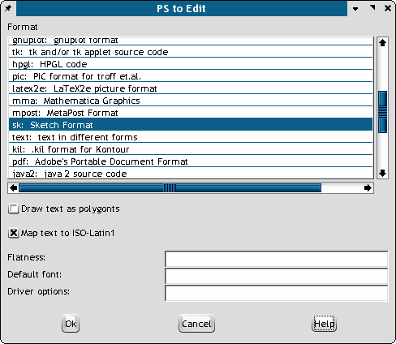

Wie schon auf der vorherigen Seite gesagt, ist es eine der schwierigeren Aufgaben beim DTP, etwas in das eigene Layout hineinzubekommen. Im folgenden finden Sie einige Tips, die ich bei der Arbeit mit dem neuen SVG-Importer entwickelt habe. Für mich ist der SVG-Import aus verschiedenen Gründen vorteilhaft: Er läßt sich mit Scribus bearbeiten und kann auch farblich sehr leicht modifiziert werden. Er ist kompakt, und die erzeugten PDF-Dateien sind ebenfalls klein. Importierte SVG-Dateien lassen sich einwandfrei drucken.
Hintergrund: Ich hatte mich bereit erklärt, vor einer Gruppe hiesiger Fachleute, die zumeist aus MS-orientierten Web-Entwicklern bestand, eine Präsentation vorzuführen. Mein Thema war PDF und das Web. Mein Ziel war es, aufzuzeigen, an welchen Stellen sich PDF-Dateien in den Web-Inhalt integrieren lassen. Ich war entschlossen, Scribus herauszustellen und diesen Leuten zu demonstrieren, wie mächtig Entwicklerwerkzeuge auf der Basis freier Software sein können – und dies in Form einer PDF-"Präsentation".
Sogleich stellten sich einige Schwierigkeiten ein:
Problem: Das Scribus-Logo mußte ins SVG-Format, denn ich wollte beide Logos (das von Scribus und das der Gruppe) als SVG haben, um diese stark vergrößern zu können – etwa bis auf 2 Meter Größe. Und so habe ich es gemacht:
Franz hatte das Original-Logo dankenswerterweise im EPS-Format erstellt. Allerdings war ein Teil des Logos in der EPS-Datei eine Bitmap-Datei. Meine Geheimwaffe war pstoedit, ein kleines Befehlszeilenprogramm, das Bitmap-, EPS- und PS-Dateien in alle möglichen anderen Vektorformate umwandelt. Wenn es korrekt installiert ist, können Sie es als eine Art Plug-in für GSview verwenden.
Öffnen Sie das Scribus-Logo als EPS-Datei in GSview. Wählen Sie "Bearbeiten" > "Konvertierung in Vektor-Format", und es erscheint folgende Dialogbox:
|  |
Beim Durchsehen der beeindruckend langen Liste an Dateiformaten für den Export bin ich auf Sketch (heute: Skencil) gestoßen, das für SVG geeignet ist. Also habe ich es ausgewählt und Text nach Polygone markiert. Warum? Der Umgang mit SVG-Text ist heikel, und er funktioniert in Sketch (oder Inkscape) noch nicht ganz zuverlässig. Danach zeigte GSview kurz einen leeren Bildschirm und schon hatte ich eine Sketch-Datei (mit .sk-Endung). Ich habe sie mit Sketch geöffnet, und alles sah gut aus, also exportierte ich die SVG-Datei aus Sketch, um sie nach Scribus zu importieren. Perfekt. Nein, noch nicht ganz. Einige Elemente hatten den Export nicht sauber überstanden und waren im SVG-Format unsichtbar. (Zu diesem Zeitpunkt war der SVG-Importer eine Woche alt, und so schrieb ich es seiner Fehlerhaftigkeit bzw. einer Fehlfunktion zu. Später fand ich jedoch heraus, daß dies nicht der Fall gewesen war. Scribus eignet sich also ohne weiteres, wohlgeformtes SVG zu importieren!)
Rein intuitiv öffnete ich also dieselbe SVG-Datei in Sodipodi und speicherte sie erneut. Dann importierte ich sie wieder: Schon besser, aber noch nicht perfekt. Nun entdeckte ich in Sodipodi, daß es eine Option gibt, die im einfachen SVG-Format speichern läßt. Gut, also sind wir fast am Ziel. Ich konnte die Elemente der Gruppe klar erkennen, doch waren einige von ihnen leer. Zurück in Scribus, hob ich die Gruppierung aller Elemente in der importierten SVG-Datei auf und wählte die leeren aus. Interessanterweise entdeckte ich im Vektorgrafikdialog in Scribus, daß einige der Pfade nicht geschlossen waren. Ein Klick auf "Pfad schließen" - und voila, es erschienen die Farben. Nach wenigen Minuten des Klickens und Pfad-schließens hatte ich das Scribus-Logo in Scribus, als SVG. Aufgabe erledigt.
Denselben Trick habe ich benutzt, um Tabellen in einem PDF-Dokument nach Scribus zu importieren. Einer der Scribus-Anwender auf der Liste hatte versucht, Scribus anstelle von InDesign zu benutzen. Beim Testen stellte sich als Problem heraus, daß es Scribus an Tabellenunterstützung mangelt und InDesign diese gut beherrscht. Daher kamen wiederum PStoedit, Sketch und Sodipodi als Retter zum Einsatz.
Ich bekam also die InDesign-Datei. Sie in Scribus zu reproduzieren wäre zwar möglich, aber etwas zu zeitaufwendig gewesen. Von InDesign aus exportierte ich eine PDF-1.3-Datei, schlicht und einfach. Dann: Öffnen der PDF-Datei in GSview. Einsatz des PStoedit-Plugins, um diese wieder ins Sketch-Format zu konvertieren. Datei mit Sketch öffnen – sieht auf dem Bildschirm perfekt aus. Exportieren nach SVG. Öffnen der Datei in Scribus. Wir sind fast am Ziel. SVG-Datei nochmals in Sodipodi öffnen und im einfachen SVG-Format abspeichern. Importieren nach Scribus. Resultat: Ein perfektes Spiegelbild der originalen PDF-Datei.
Vorbehalte: Am besten klappt es mit EPS- oder PDF-Dateien, die Text oder Vektorelemente wie Kurven oder Linien enthalten. Vergessen Sie Dateien mit Fotos oder komplexen Farbverläufen! Doch zum Konvertieren von Logos, Tabellen und teilweise sogar stilisiertem Text ist es eine originelle und zugleich nützliche Möglichkeit, Grafik in Scribus hineinzubekommen. Diese läßt sich dann nicht nur bearbeiten, sondern Sie können auch sicher sein, daß sie als PDF-Dokument oder im Druckergebnis perfekt wiedergegeben wird.
Meine Erfahrungen: Erstens, PStoedit ist ein wirklich bemerkenswertes Hilfsprogramm, das sich über GSview besonders einfach bedienen läßt. Die Qualität der Konvertierung war – selbst mit Standardeinstellungen – einfach erstaunlich. Die Kurven in der EPS-Datei von Scribus entsprachen vollständig der SVG-Grafik - und ebenso die Farben. Zweitens ist das Neuspeichern eines komplexen Bildformats in einer anderen Anwendung (als derjenigen, die es erzeugt hat) manchmal mit einem "Reinigungseffekt" verbunden. Meiner Erfahrung nach kann aber auch das Gegenteil der Fall sein. Drittens sollten Sie keine Angst haben, etwas zu experimentieren, insbesondere mit SVG. SVG ist ein herrliches Dateiformat mit vielen Fähigkeiten. Es ist allerdings relativ neu, und keine Anwendung (weder freie noch kommerzielle Software) kann es derzeit perfekt im- oder exportieren. Darüber hinaus ist kein einziger Vektoreditor in der Lage, die SVG-Spezifikationen vollständig zu unterstützen.
So, und nun wissen Sie, weshalb SVG mein neues Lieblingsformat ist.